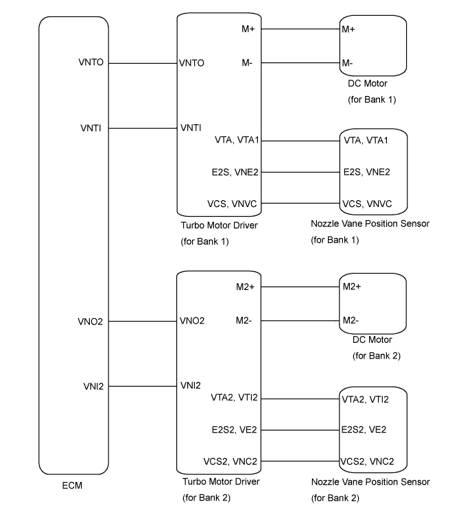
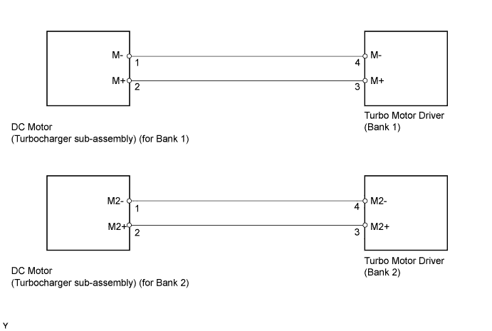
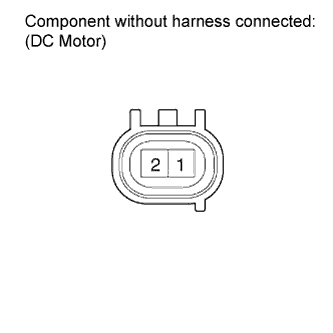
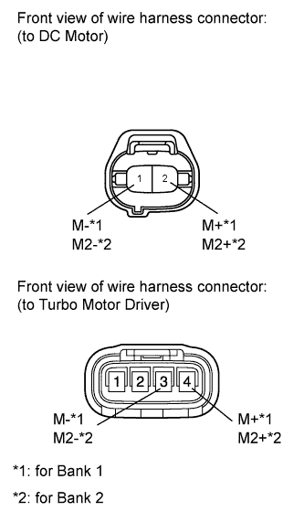
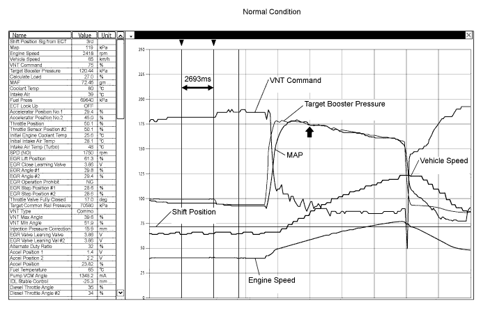

DTC P0046 Turbocharger / Supercharger Boost Control Solenoid Circuit Range / Performance |
DTC P0047 Turbocharger/Supercharger Boost Control "A" Circuit Low |
DTC P0048 Turbocharger/Supercharger Boost Control "A" Circuit High |
DTC P004B Turbocharger/Supercharger Boost Control Solenoid "B" Circuit Range/Performance |
DTC P004C Turbocharger/Supercharger Boost Control Solenoid "B" Circuit Low |
DTC P004D Turbocharger/Supercharger Boost Control Solenoid "B" Circuit High |

| DTC Detection Drive Pattern | DTC Detection Condition | Trouble Area |
| Engine switch on (IG) for 5 seconds | Either of the following conditions are met when the motor is driving (1 trip detection logic):
|
|
| DTC Detection Drive Pattern | DTC Detection Condition | Trouble Area |
| Engine switch on (IG) for 1 second | Both of following conditions are met for 1 second or more when the motor is driving (1 trip detection logic):
|
|
| DTC Detection Drive Pattern | DTC Detection Condition | Trouble Area |
| Engine switch on (IG) for 1 second | DC motor current is 6.5 A or more for 0.5 seconds or more when the motor is operating (1 trip detection logic). |
|

| 1.INSPECT TURBO MOTOR DRIVER (for Bank 1 and Bank 2) |
Remove the rear fender splash shield sub-assembly RH.
Remove the front fender liner LH.
Connect the intelligent tester to the DLC3.
Turn the engine switch on (IG) and turn the tester on.
Enter the following menus: Powertrain / Engine / DTC.
Read the DTCs.
Clear the DTCs (Click here).
Turn the engine switch off.
 |
Interchange the connectors for the turbo motor driver of bank 1 and bank 2.
Turn the engine switch on (IG) for 5 seconds or more.
Enter the following menus: Powertrain / Engine / DTC.
Read the DTCs.
| Display (DTC Output) | Proceed to |
| DTCs do not change | A |
| DTCs change | B |
| No DTC output | C |
|
| ||||
|
| ||||
| A | |
| 2.INSPECT TURBOCHARGER SUB-ASSEMBLY (DC MOTOR) (for Bank 1 or Bank 2) |
 |
Disconnect the DC motor connector.
Measure the resistance according to the value(s) in the table below.
| Tester Connection | Condition | Specified Condition |
| 1 (M-) - 2 (M+) | Always | 1 to 100 Ω |
| Tester Connection | Condition | Specified Condition |
| 1 (M2-) - 2 (M2+) | Always | 1 to 100 Ω |
|
| ||||
| OK | |
| 3.CHECK HARNESS AND CONNECTOR (DC MOTOR - TURBO MOTOR DRIVER) |
 |
Disconnect the DC motor connector.
Disconnect the turbo motor driver connector.
Measure the resistance according to the value(s) in the table below.
| Tester Connection | Condition | Specified Condition |
| DC motor connector-1 (M-) - Turbo motor driver connector-4 (M-) | Always | Below 1 Ω |
| DC motor connector-2 (M+) - Turbo motor driver connector-3 (M+) | Always | Below 1 Ω |
| Tester Connection | Condition | Specified Condition |
| DC motor connector-4 (M2-) - Turbo motor driver connector-4 (M2-) | Always | Below 1 Ω |
| DC motor connector-8 (M2+) - Turbo motor driver connector-3 (M2+) | Always | Below 1 Ω |
| Tester Connection | Condition | Specified Condition |
| DC motor connector-1 (M-) or Turbo motor driver connector-4 (M-) - Body ground | Always | 10 kΩ or higher |
| DC motor connector-2 (M+) or Turbo motor driver connector-3 (M+) - Body ground | Always | 10 kΩ or higher |
| Tester Connection | Condition | Specified Condition |
| DC motor connector-4 (M2-) or Turbo motor driver connector-4 (M2-) - Body ground | Always | 10 kΩ or higher |
| DC motor connector-8 (M2+) or Turbo motor driver connector-3 (M2+) - Body ground | Always | 10 kΩ or higher |
|
| ||||
|
| ||||
| 4.REPLACE TURBOCHARGER SUB-ASSEMBLY (for Bank 1 or Bank 2) |
Replace turbocharger sub-assembly (for Bank 1 or Bank 2) (Click here).
|
| ||||
| 5.REPLACE TURBO MOTOR DRIVER (for Bank 1 or Bank 2) |
Replace turbo motor driver (for Bank 1 or Bank 2) (Click here).
|
| ||||
| 6.REPAIR OR REPLACE HARNESS OR CONNECTOR |
| NEXT | |
| 7.CONFIRM WHETHER MALFUNCTION HAS BEEN SUCCESSFULLY REPAIRED |
Connect the intelligent tester to the DLC3.
Clear the DTCs (Click here).
Turn the engine switch off.
Turn the engine switch on (IG) for 5 seconds or more.
Enter the following menus: Powertrain / Engine / DTC.
Confirm that the DTC is not output again.
| NEXT | ||
| ||
| 8.INSPECT TURBOCHARGER SUB - ASSEMBLY |
Connect the intelligent tester to the DLC3.
Turn the engine switch on (IG) and turn the tester on.
Start the engine and warm up.
Move the shift lever to 3rd and accelerate the vehicle with the accelerator fully open.
Stop the vehicle
Enter the following menus: Powertrain / Engine / DTC.
Read the DTCs.
| Display (DTC Output) | Proceed to |
| DTC P0046, P0047, P0048, P004B, P004C and/or P004D are output | A |
| No DTC output | B |

|
| ||||
| B | ||
| ||